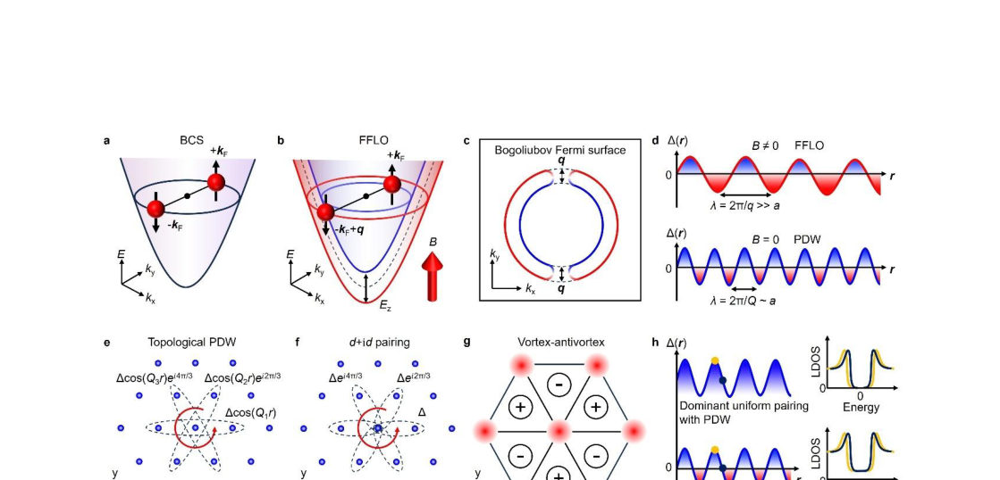
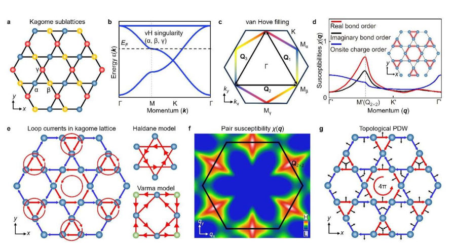
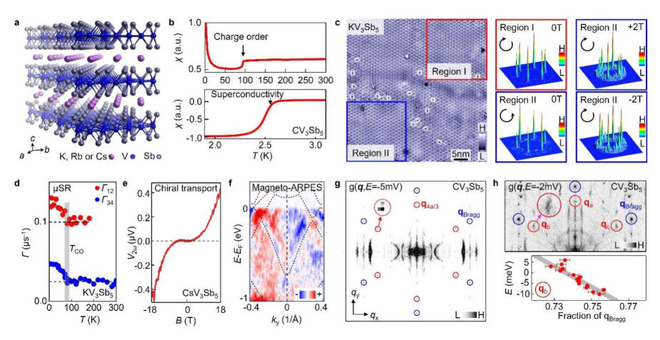
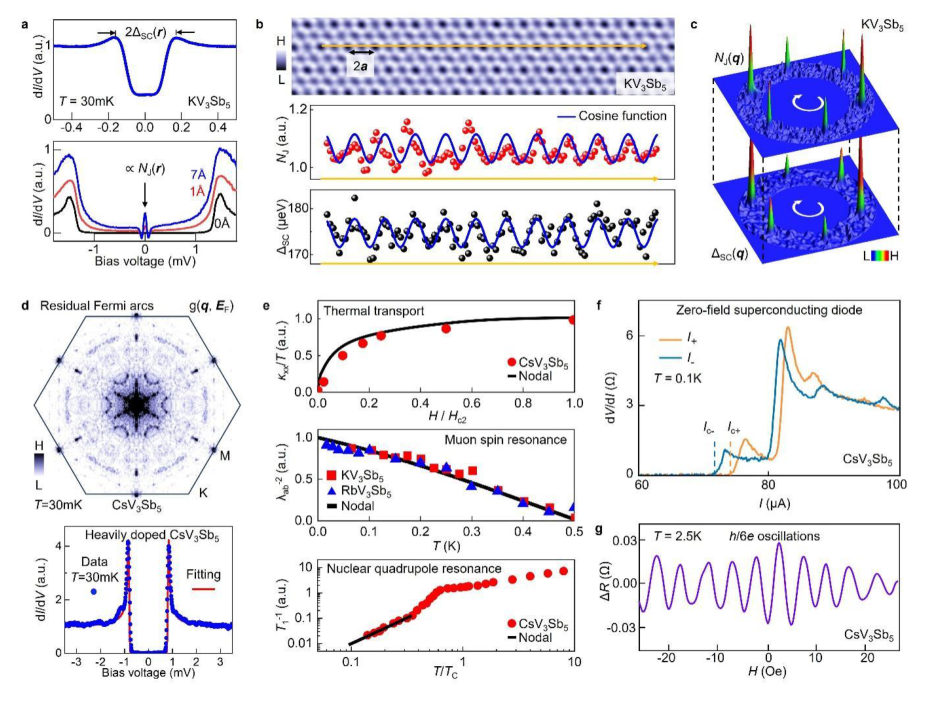
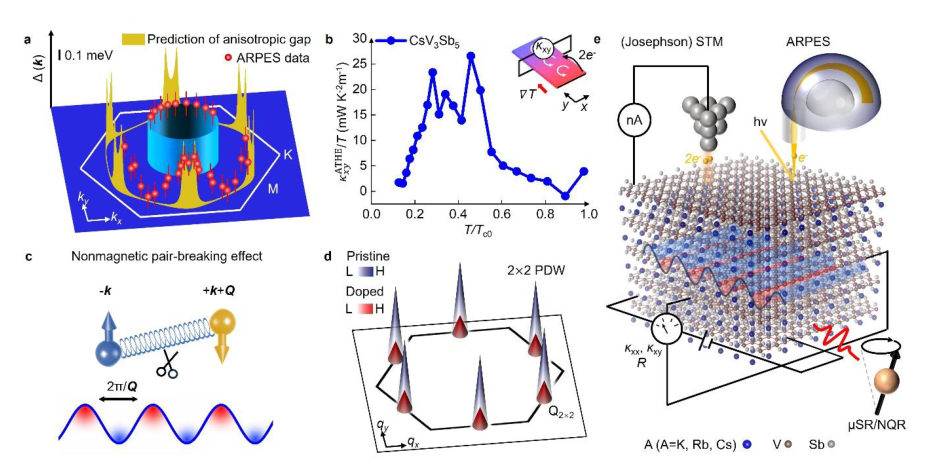

Authors: Jia-Xin Yin, Xianxin Wu, Mark H. Fischer, Xiao-Yu Yan, Yigui Zhong, Kozo Okazaki
Type: both · Category: strongly correlated electrons · PDF: https://arxiv.org/pdf/2608.29156v1
Analysis basis: full PDF text, analyzed in chunks





Summary. This paper reviews the theoretical framework and experimental evidence for Topological Pair Density Waves (TPDWs) in kagome superconductors. It explains that TPDWs emerge when multiple pairing components have a relative phase winding, leading to topological properties like broken time-reversal symmetry. The research highlights the profound implications of this interplay for understanding exotic superconducting states.
Why it may be interesting. The study of TPDWs connects superconducting pairing mechanisms to topological matter, which is a key area in modern condensed matter theory, bridging concepts from superconductivity and topological band theory.
Main problem. The paper investigates Topological Pair Density Waves (TPDWs) in unconventional superconductors, specifically focusing on their potential realization in kagome superconductors.
Main result. TPDWs arise from the phase winding of multiple finite-momentum pairing components, leading to time-reversal symmetry breaking and a non-trivial topological electronic structure.
Method. The work combines theoretical reviews, starting from the FFLO state, with discussions of experimental signatures observed in materials like AV3Sb5.
Model / system. The focus is on kagome superconductors, where the interplay between PDW, charge order, and uniform pairing is analyzed. The theoretical framework involves extensions of the FFLO state to include topological aspects.
Key observables. Topological electronic structure (non-zero Chern number), superconducting loop currents, anomalous thermal Hall effect, and superconducting diode effect.
Important parameters / regimes. The wave vector Q (finite momentum pairing), the relative phase winding between Q components, and the material parameters of the kagome lattice.
Assumptions / limitations. The analysis often builds upon the analogy to the FFLO state and assumes the existence of complex interplay between different types of order (PDW, CDW, chiral).
Figures summary. Figures illustrate the transition from BCS pairing to FFLO states, the formation of PDWs with static Q, and the topological nature of TPDWs in hexagonal lattices.
Paper structure. The paper progresses by introducing the concept of PDW, extending it to TPDW via phase winding, discussing the specific realization in the kagome lattice, reviewing experimental evidence from AV3Sb5, and concluding with future research directions.
The pair density wave (PDW) is an unconventional superconducting state exhibiting periodic pairing modulations due to pairing with finite momentum Q. In two dimensions, multiple Q components of the PDW can have a non-trivial relative phase, breaking time-reversal symmetry and resulting in a topological electronic structure. Here we review progress on exploring such topological PDWs (TPDWs) and discuss their potential realization in kagome superconductors. We first introduce the concept of a TPDW starting from the Fulde-Ferrell-Larkin-Ovchinnikov (FFLO) state and examine the challenges toward its realization. We then discuss the possibility of a TPDW in the kagome lattice, which intertwines with chiral superconductivity and loop currents, thus connecting to models describing the quantum anomalous Hall effect. Furthermore, we review the experimental signatures of a TPDW in AV3Sb5 (A = Cs, Rb, K) superconductors and highlight related quantum effects, including switchable chiral pairing modulations, Bogoliubov Fermi states, the superconducting diode effect, and the anomalous thermal Hall effect. Finally, we project the future research opportunities of this correlated topological quantum phase and discuss its broad implications for finite-momentum pairing, topological matter, and chiral superconductivity.